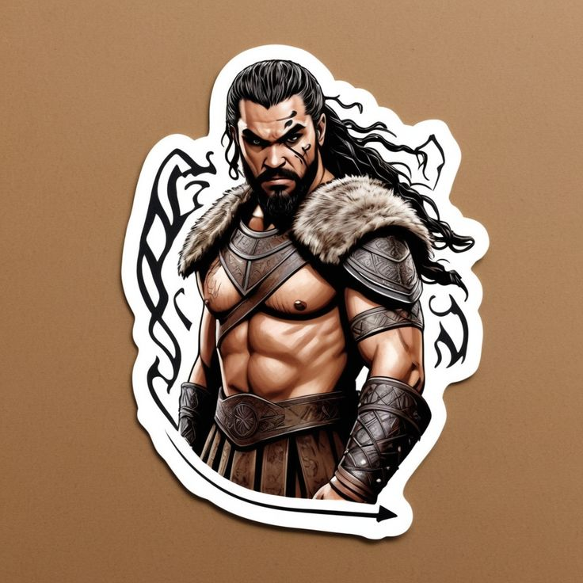

Got Characters just for fun

Mother of Dragons

khal drogo
Tyrion lannister
Table of Content
| Section | Topic |
|---|---|
| 1 | Introduction |
| 2 | Project Overview |
| 3 | Setting Up Project |
| 4 | What We Are Building |
| 5 | Stories Bar |
| 6 | Feed Card |
| 7 | Footer |
| 8 | Feedback |
Instagram has one of the most recognizable and polished UIs on the web: a clean feed, familiar icons, and a mobile-first layout that feels natural on any screen. Rebuilding this kind of interface is a great way to sharpen your HTML and CSS skills.
In this tutorial, you’ll learn how to clone a simplified Instagram-style UI using only HTML and CSS — no JavaScript at all. We’ll focus entirely on layout, typography, spacing, and responsive design to create a static but realistic interface.
By the end, you will have:
To keep this tutorial focused on HTML and CSS:
We'll use placeholder images, icons, and static text to simulate a real feed. The goal is to master structure and styling, not functionality.
This tutorial is perfect if you:
Before you start, you should be comfortable with:
A simple code editor (VS Code, Sublime, etc.) and a modern browser (Chrome, Firefox, Edge, Safari) are enough.
Before writing any code, let’s take a clear look at the layout we’re going to build. Instagram is designed mobile-first, and that’s exactly how we’ll approach this tutorial: we’ll begin with a compact mobile layout, then scale it up for larger screens.
Below is a breakdown of the key UI sections we’ll recreate-purely with HTML and CSS, no JavaScript.
A minimal header similar to Instagram’s mobile app:
We’ll include icons using a free CDN (e.g., Remix Icon or Font Awesome).
A horizontally scrollable row of circular profile bubbles:
We’ll simulate stories with placeholder images.
Each post in the feed will include:
Post Header
Post Image
Post Details
We’ll style these to mimic Instagram’s spacing, fonts, and alignment.
A fixed bottom bar similar to Instagram’s mobile app:
This will remain visible as users “scroll” the page (although our page is static).
We’ll also create:
This helps keep the code clean and maintainable.
Although Instagram is primarily mobile, we’ll ensure:
The core layout will rely on Flexbox, CSS Grid, and media queries.
By the end of this tutorial, you will have:
Before we start building the Instagram UI clone, let’s prepare our project structure and core styling foundation. Keeping things organized from the start will make the rest of the tutorial much easier.
Create a new folder for the project:
Instagram uses clean, modern fonts. We’ll use Inter, which looks great and is free.
Add this inside
of index.html:In styles.css, start by creating CSS variables for consistent styling:
These values mimic Instagram’s color scheme.
Apply a reset to ensure consistency across browsers:
Add basic utility classes to save time later:
You’ll use these repeatedly for nav bars, story bubbles, feed headers, etc.
Inside index.html, start with a simple shell:
This sets up the skeleton for the UI we will flesh out in the next sections.
The top navigation bar is one of Instagram’s most recognizable UI elements. It’s clean, minimal, and always visible. In this section, we’ll build a simple, mobile-first version using only HTML and CSS.
The top nav will look like this:
Left side → Logo (we’ll use text for simplicity) Right side → Icons (Add, Like, Messages)
We will use Remix Icon, a free icon set that loads via CDN.
Place this inside your head
Inside your header class="top-nav":
Add this to styles.css to match Instagram's spacing and layout:
Even though we aren’t using JS, CSS hover states add polish:
If you want a logo closer to the real Instagram script:
You now have:
The feed card is the heart of the Instagram UI. Each post follows the same structure:
We’ll build this step-by-step using HTML and CSS.
You can duplicate this post block later to add more posts.
Add to styles.css:
If you want fixed height like Instagram’s square posts:
Mother of Dragons
khal drogo
Tyrion lannister